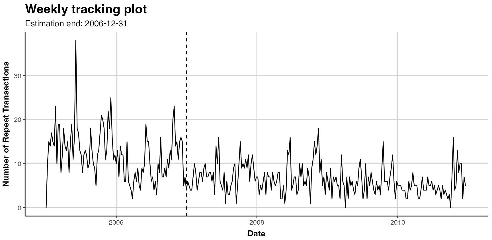
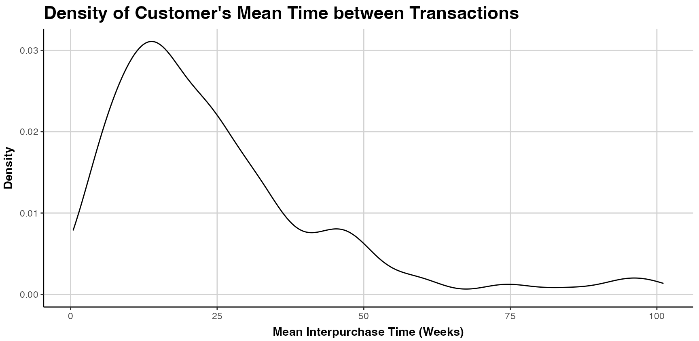

Prerequisites: Setup the R environment
Install the stable version from CRAN:
install.packages("CLVTools")Install the development version from GitHub (using the
devtools package (Wickham, Hester,
and Chang 2019)):
install.packages("devtools")
devtools::install_github("bachmannpatrick/CLVTools", ref = "development")Load the package
Apply the CLVTools Package
General workflow
Independent of the latent attrition model applied in
CLVTools, the general workflow consists of three main
steps:
Create a
clv.dataobject containing the dataset and required meta-information such as date formats and column names in the dataset. After initializing the object, there is the option to add additional information on covariates in a separate step.Fit the model on the data provided.
Use the estimated model parameters to predict future customer purchase behavior.
CLVTools
CLVTools provides two ways for evaluating latent
attrition models: you can use of the provided formula interface or you
can use standard functions (non-formula interface). Both offer the same
functionality, however the formula interface is especially helpful when
covariates are included in the model. Through out this walkthrough, we
will illustrate both options.
Reporting and plotting results is facilitated by the implementation
of well-known generic methods such as plot(),
print() and summary(). These commands adapt
their output according to the model state and may be used at any point
of the workflow.
Load sample data provided in the package
As Input data CLVTools requires customers’ transaction
history. Every transaction record consists of a purchase date and
customer ID. Optionally, the price of the transaction may be included to
allow for prediction of future customer spending using an additional
Gamma/Gamma model(Fader, Hardie, and Lee 2005b;
Colombo and Jiang 1999). Using the full history of transaction
data allows for comprehensive plots and summary statistics, which allow
the identification of possible issues prior to model estimation. Data
may be provided as data.frame or data.table
(Dowle and Srinivasan 2019).
It is common practice to split time series data into two parts, an estimation and a holdout period. The model is estimated based on the data from the estimation period while the data from the holdout period allows to rigorously assess model performance. Once model performance is checked on known data one can proceed to predict data without a holdout period. The length of the estimation period is heavily dependent on the characteristics of the analyzed dataset. We recommend to choose an estimation period that contains in minimum the length of the average inter-purchase time. Note that all customers in the dataset need to purchase at least once during the estimation period, i.e. these models do not account for prospects who have not yet a purchase record.
Some models included in CLVTools allow to model the
impact of covariates. These covariates may explain heterogeneity among
the customers and therefore increase the predictive accuracy of the
model. At the same time, we may also identify and quantify the effects
of these covariates on customer purchase and customer attrition.
CLVTools distinguishes between time-invariant and
time-varying covariates. Time-invariant covariates include customer
characteristics such as demographics that do not change over time.
Time-varying covariates are allowed to change over time. They include
for example direct marketing information or seasonal patterns.
For the following example, we use simulated data comparable to data
from a retailer in the apparel industry. The dataset contains
transactional detail records for every customer consisting of customer
id, date of purchase and the total monetary value of the transaction.
The apparel dataset is available in the CLVTools package.
Use the data(apparelTrans) to load it:
data("apparelTrans")
apparelTrans
#> Id Date Price
#> <char> <Date> <num>
#> 1: 1 2005-01-02 230.30
#> 2: 1 2005-09-06 84.39
#> 3: 1 2006-01-18 131.07
#> 4: 1 2006-04-05 86.43
#> 5: 1 2006-07-02 11.49
#> ---
#> 3183: 600 2005-01-02 24.94
#> 3184: 600 2005-04-17 54.97
#> 3185: 600 2005-06-30 66.84
#> 3186: 600 2005-10-27 22.54
#> 3187: 600 2006-01-09 12.97Initialize the CLV-Object
Before we estimate a model, we are required to initialize a data
object using the clvdata() command. The data object
contains the prepared transactional data and is later used as input for
model fitting. Make sure to store the generated object in a variable,
e.g. in our example clv.apparel.
Be aware that probabilistic models such as the ones implemented in
CLVTools are usually applied to specific customer cohorts.
That means, you analyze customer that have joined your company at the
same time (usually same day, week, month, or quarter). For more
information on cohort analysis, see also here.
Consequently, the data apparelTrans in this example is not the full
transaction records of a fashion retailer, but rather only the customer
cohort of 250 customers purchasing for the first time at this business
on the day of 2005-01-03. This has to be done before initializing a data
object using the clvdata() command.
Through the argument data.transactions a
data.frame or data.table which contains the
transaction records, is specified. In our example this is
data.transactions=apparelTrans. The argument
date.format is used to indicate the format of the date
variable in the data used. The date format in the apparel dataset is
given as “year-month-day” (i.e., “2005-01-03”), therefore we set
date.format="ymd". Other combinations such as
date.format="dmy" are possible. See the documentation of
lubridate (Grolemund and Wickham
2011) for all details. time.unit is the scale used
to measure time between two dates. For this dataset and in most other
cases The argument time.unit="week" is the preferred
choice. Abbreviations may be used (i.e. “w”).
estimation.split indicates the length of the estimation
period. Either the length of the estimation period (in previous
specified time units) or the date at which the estimation period ends
can be specified. If no value is provided, the whole dataset is used as
estimation period (i.e. no holdout period). In this example, we use an
estimation period of 40 weeks. Finally, the three name arguments
indicate the column names for customer ID, date and price in the
supplied dataset. Note that the price column is optional.
clv.apparel <- clvdata(apparelTrans,
date.format="ymd",
time.unit = "week",
estimation.split = 104,
name.id = "Id",
name.date = "Date",
name.price = "Price")Check the clvdata Object
To get details on the clvdata object, print it to the
console.
clv.apparel
#> CLV Transaction Data
#>
#> Call:
#> clvdata(data.transactions = apparelTrans, date.format = "ymd",
#> time.unit = "week", estimation.split = 104, name.id = "Id",
#> name.date = "Date", name.price = "Price")
#>
#> Total # customers 600
#> Total # transactions 3183
#> Spending information TRUE
#>
#>
#> Time unit Weeks
#>
#> Estimation start 2005-01-02
#> Estimation end 2006-12-31
#> Estimation length 104.0000 Weeks
#>
#> Holdout start 2007-01-01
#> Holdout end 2010-12-20
#> Holdout length 207.0000 WeeksAlternatively the summary() command provides full
detailed summary statistics for the provided transactional detail.
summary() is available at any step in the process of
estimating a probabilistic customer attrition model with
CLVTools. The result output is updated accordingly and
additional information is added to the summary
statistics.nobs() extracts the number of observations. For
the this particular dataset we observe a total of 250 customers who made
in total 2257 repeat purchases. Approximately 26% of the customers are
zero repeaters, which means that the only a minority of the customers do
not return to the store after their first purchase.
summary(clv.apparel)
#> CLV Transaction Data
#>
#> Time unit Weeks
#> Estimation length 104.0000 Weeks
#> Holdout length 207.0000 Weeks
#>
#> Transaction Data Summary
#> Estimation Holdout Total
#> Number of customers - - 600
#> First Transaction in period 2005-01-02 2007-01-01 2005-01-02
#> Last Transaction in period 2006-12-31 2010-12-20 2010-12-20
#> Total # Transactions 1866 1317 3183
#> Mean # Transactions per cust 3.110 5.557 5.305
#> (SD) 2.714 5.123 6.119
#> Mean Spending per Transaction 40.545 36.977 39.069
#> (SD) 73.362 55.356 66.519
#> Total Spending 75657.730 48699.170 124356.900
#> Total # zero repeaters 213 - -
#> Percentage of zero repeaters 35.500 - -
#> Mean Interpurchase time 24.823 30.604 37.817
#> (SD) 19.417 24.756 42.339Estimate Model Parameters
After initializing the object, we can start estimating the first
probabilistic latent attrition model. We start with the standard
Pareto/NBD model (Schmittlein, Morrison, and
Colombo 1987) and therefore use the command pnbd()
to fit the model and estimate model parameters. clv.data
specifies the initialized object prepared in the last step. Optionally,
starting values for the model parameters and control settings for the
optimization algorithm may be provided: The argument
start.params.model allows to assign a vector
(e.g. c(alpha=1, beta=2, s=1, beta=2) in the case of the
Pareto/NBD model) of starting values for the optimization. This is
useful if prior knowledge on the parameters of the distributions are
available. By default starting values are set to 1 for all parameters.
The argument optimx.args provides an option to control
settings for the optimization routine. It passes a list of arguments to
the optimizer. All options known from the package optimx
(Nash and Varadhan 2011; Nash 2014) may be
used. This option enables users to specify specific optimization
algorithms, set upper and/or lower limits or enable tracing information
on the progress of the optimization. In the case of the standard
Pareto/NBD model, CLVTools uses by default the optimization
method L-BFGS-G (Byrd et al.
1995). If the result of the optimization is in-feasible, the
optimization automatically switches to the more robust but often slower
Nelder-Mead method (Nelder and Mead
1965). verbose shows additional output.
To execute the model estimation you have the choice between a formula-based interface and a non-formula-based interface. In the following we illustrate the two alternatives.
Estimating the model using formula interface:
est.pnbd <- latentAttrition(formula = , family = pnbd, data=clv.apparel)
#> Starting estimation...
#> Estimation finished!
est.pnbd
#> Pareto/NBD Standard Model
#>
#> Call:
#> latentAttrition(family = pnbd, data = clv.apparel)
#>
#> Coefficients:
#> r alpha s beta
#> 1.4490 48.6361 0.5613 46.8844
#> KKT1: TRUE
#> KKT2: TRUE
#>
#> Used Options:
#> Correlation: FALSEUsing start parameters and other additional arguments for the optimzier:
est.pnbd <- latentAttrition(formula = , family = pnbd, data=clv.apparel,
optimx.args = list(control=list(trace=5),
method="Nelder-Mead"),
start.params.model=c(r=1, alpha=10, s=2, beta=8))Estimating the model using non-formula interface:
est.pnbd <- pnbd(clv.data = clv.apparel)
est.pnbdIf we assign starting parameters and additional arguments for the optimizer we use:
est.pnbd <- pnbd(clv.data = clv.apparel,
start.params.model = c(r=1, alpha = 2, s = 1, beta = 2),
optimx.args = list(control=list(trace=5),
method="Nelder-Mead"
))Parameter estimates may be reported by either printing the estimated
object (i.e. est.pnbd) directly in the console or by
calling summary(est.pnbd) to get a more detailed report
including the likelihood value as well as AIC and BIC. Alternatively
parameters may be directly extracted using coef(est.pnbd).
Also loglik(), confint() and
vcov() are available to directly access the Loglikelihood
value, confidence intervals for the parameters and to calculate the
Variance-Covariance Matrix for the fitted model. For the standard
Pareto/NBD model, we get 4 parameters
and
.
where
represent the shape and scale parameter of the gamma distribution that
determines the purchase rate and
of the attrition rate across individual customers.
can be interpreted as the mean purchase and
as the mean attrition rate. A significance level is provided for each
parameter estimates. In the case of the apparelTrans dataset we observe
a an average purchase rate of
transactions and an average attrition rate of
per customer per week. KKT 1 and 2 indicate the Karush-Kuhn-Tucker
optimality conditions of the first and second order (Kuhn and Tucker 1951). If those criteria are
not met, the optimizer has probably not arrived at an optimal solution.
If this is the case it is usually a good idea to rerun the estimation
using alternative starting values.
#Full detailed summary of the parameter estimates
summary(est.pnbd)
#> Pareto/NBD Standard Model
#>
#> Call:
#> latentAttrition(family = pnbd, data = clv.apparel)
#>
#> Fitting period:
#> Estimation start 2005-01-02
#> Estimation end 2006-12-31
#> Estimation length 104.0000 Weeks
#>
#> Coefficients:
#> Estimate Std. Error z-val Pr(>|z|)
#> r 1.4490 0.2434 5.952 2.64e-09 ***
#> alpha 48.6361 7.4892 6.494 8.35e-11 ***
#> s 0.5613 0.2710 2.071 0.0384 *
#> beta 46.8844 35.6114 1.317 0.1880
#> ---
#> Signif. codes: 0 '***' 0.001 '**' 0.01 '*' 0.05 '.' 0.1 ' ' 1
#>
#> Optimization info:
#> LL -5848.0978
#> AIC 11704.1957
#> BIC 11721.7834
#> KKT 1 TRUE
#> KKT 2 TRUE
#> fevals 25.0000
#> Method L-BFGS-B
#>
#> Used Options:
#> Correlation FALSE
#Extract the coefficients only
coef(est.pnbd)
#> r alpha s beta
#> 1.4489768 48.6360846 0.5612598 46.8843632
#Alternative: oefficients(est.pnbd.obj)To extract only the coefficients, we can use coef(). To
access the confidence intervals for all parameters
confint() is available.
#Extract the coefficients only
coef(est.pnbd)
#> r alpha s beta
#> 1.4489768 48.6360846 0.5612598 46.8843632
#Alternative: oefficients(est.pnbd.obj)
#Extract the confidence intervals
confint(est.pnbd)
#> 2.5 % 97.5 %
#> r 0.97186638 1.926087
#> alpha 33.95755820 63.314611
#> s 0.03001565 1.092504
#> beta -22.91271866 116.681445In order to get the Likelihood value and the corresponding Variance-Covariance Matrix we use the following commands:
# LogLikelihood at maximum
logLik(est.pnbd)
#> 'log Lik.' -5848.098 (df=4)
# Variance-Covariance Matrix at maximum
vcov(est.pnbd)
#> r alpha s beta
#> r 0.05925727 1.7049763 -0.01786466 -3.472616
#> alpha 1.70497629 56.0878423 -0.43375970 -82.963755
#> s -0.01786466 -0.4337597 0.07346697 9.366245
#> beta -3.47261638 -82.9637547 9.36624462 1268.172554As an alternative to the Pareto/NBD model CLVTools
features the BG/NBD model (Fader, Hardie, and Lee
2005a) and the GGomp/NBD (Bemmaor and
Glady 2012). To use the alternative models replace
pnbd() by the corresponding model-command. Note that he
naming and number of model parameters is dependent on the model. Consult
the manual for more details on the individual models. Beside
probabilistic latent attrition models, CLVTools also
features the Gamma/Gamma model (Colombo and Jiang
1999; Fader, Hardie, and Lee 2005a) which is used to predict
customer spending. See section Customer Spending
for details on the spending model.
| Command | Model | Covariates | Type | |
|---|---|---|---|---|
| pnbd() | Pareto/NBD | time-invariant & time-varying | latent attrition model | |
| bgnbd() | BG/NBD | time-invariant | latent attrition model | |
| ggomnbd() | GGom/NBD | time-invariant | latent attrition model | |
| gg() | Gamma/Gamma | - | spending model |
To estimate the GGom/NBD model we apply the ggomnbd()to
the clv.apparel object. The GGom/NBD model is more flexible
than the Pareto/NBD model, however it sometimes is challenging to
optimize. Note that in this particular case providing start parameters
is essential to arrive at an optimal solution
(i.e. kkt1: TRUE and kkt2: TRUE).
To execute the model estimation you have the choice between a formula-based interface and a non-formula-based interface. In the following we illustrate the two alternatives.
Estimating the model using formula interface:
est.ggomnbd <- latentAttrition(formula = , family = ggomnbd, data=clv.apparel,
optimx.args = list(method="Nelder-Mead"),
start.params.model=c(r=0.7, alpha=5, b=0.005, s=0.02, beta=0.001))Predict Customer Behavior
Once the model parameters are estimated, we are able to predict
future customer behavior on an individual level. To do so, we use
predict() on the object with the estimated parameters
(i.e. est.pnbd). The prediction period may be varied by
specifying prediction.end. It is possible to provide either
an end-date or a duration using the same time unit as specified when
initializing the object (i.e prediction.end = "2006-05-08"
or prediction.end = 30). By default, the prediction is made
until the end of the dataset specified in the clvdata()
command. The argument continuous.discount.factor allows to
adjust the discount rate used to estimated the discounted expected
transactions (DERT). The default value is 0.1 (=10%). Make
sure to convert your discount rate if you use annual/monthly/weekly
discount rates. An annual rate of (100 x d)\% equals a
continuous rate delta = ln(1+d). To account for time units
which are not annual, the continuous rate has to be further adjusted to
delta=ln(1+d)/k, where k are the number of
time units in a year. Probabilistic customer attrition model predict in
general three expected characteristics for every customer:
- “conditional expected transactions” (CET), which is the number of transactions to expect form a customer during the prediction period,
- “probability of a customer being alive” (PAlive) at the end of the estimation period and
- “discounted expected residual transactions” (DERT) for every customer, which is the total number of transactions for the residual lifetime of a customer discounted to the end of the estimation period.
If spending information was provided when initializing the
clvdata-object, CLVTools provides prediction
for
- predicted mean spending estimated by a Gamma/Gamma model (Colombo and Jiang 1999; Fader, Hardie, and Lee 2005a) and
- the customer lifetime value (CLV). CLV is calculated as the product of DERT and predicted spending.
If a holdout period is available additionally the true numbers of transactions (“actual.x”) and true spending (“actual.total.spending”) during the holdout period are reported.
To use the parameter estimates on new data (e.g., an other customer
cohort), the argument newdata optionally allows to provide
a new clvdata object.
results <- predict(est.pnbd)
#> Predicting from 2007-01-01 until (incl.) 2010-12-20 (207.14 Weeks).
#> Estimating gg model to predict spending...
#> Starting estimation...
#> Estimation finished!
print(results)
#> Key: <Id>
#> Id period.first period.last period.length actual.x
#> <char> <Date> <Date> <num> <int>
#> 1: 1 2007-01-01 2010-12-20 207.1429 0
#> 2: 10 2007-01-01 2010-12-20 207.1429 1
#> 3: 100 2007-01-01 2010-12-20 207.1429 9
#> 4: 101 2007-01-01 2010-12-20 207.1429 0
#> 5: 102 2007-01-01 2010-12-20 207.1429 0
#> ---
#> 596: 95 2007-01-01 2010-12-20 207.1429 4
#> 597: 96 2007-01-01 2010-12-20 207.1429 3
#> 598: 97 2007-01-01 2010-12-20 207.1429 0
#> 599: 98 2007-01-01 2010-12-20 207.1429 0
#> 600: 99 2007-01-01 2010-12-20 207.1429 0
#> actual.total.spending PAlive CET DERT
#> <num> <num> <num> <num>
#> 1: 0.00 0.9468478 7.3256573 0.46765602
#> 2: 14.37 0.9825606 3.5198114 0.22469806
#> 3: 333.35 0.2784686 0.4190901 0.02675392
#> 4: 0.00 0.4739762 1.2056215 0.07696458
#> 5: 0.00 0.2784686 0.4190901 0.02675392
#> ---
#> 596: 98.81 0.8978209 3.2162499 0.20531927
#> 597: 253.61 0.2784686 0.4190901 0.02675392
#> 598: 0.00 0.2784686 0.4190901 0.02675392
#> 599: 0.00 0.6024098 1.5323094 0.09781972
#> 600: 0.00 0.9416701 4.3513967 0.27778489
#> predicted.mean.spending predicted.total.spending predicted.CLV
#> <num> <num> <num>
#> 1: 88.64634 649.39268 41.455992
#> 2: 41.21027 145.05238 9.259868
#> 3: 37.62791 15.76949 1.006694
#> 4: 34.56278 41.66962 2.660110
#> 5: 37.62791 15.76949 1.006694
#> ---
#> 596: 26.54863 85.38701 5.450944
#> 597: 37.62791 15.76949 1.006694
#> 598: 37.62791 15.76949 1.006694
#> 599: 35.83393 54.90868 3.505265
#> 600: 19.20941 83.58774 5.336082To change the duration of the prediction time, we use the
predicton.end argument. We can either provide a time period
(30 weeks in this example):
predict(est.pnbd, prediction.end = 30)or provide a date indication the end of the prediction period:
predict(est.pnbd, prediction.end = "2006-05-08")Plotting
CLVTools, offers a variety of different plots. All
clvdata objects may be plotted using the
plot() command. Similar to summary(), the
output of plot() and the corresponding options are
dependent on the current modeling step. When applied to a data object
created the clvdata() command, the following plots can be
selected using the which option of plotting:
- Tracking plot (
which="tracking"): plots the the aggregated repeat transactions per period over a given time period. The period can be specified using theprediction.endoption. It is also possible to generate cumulative tracking plots (cumulative = FALSE). The tracking plot is the default option. - Frequency plot (
which="frequency"): plots the distribution of transactions or repeat transactions per customer, after aggregating transactions of the same customer on a single time point. The bins may be adjusted using the optiontrans.bins. (Note that iftrans.binsis changed, the option for labeling (label.remaining) usually needs to be adapted as well.) - Spending plot (
which="spending"): plots the empirical density of either customer’s average spending per transaction. Note that this includes all transactions and not only repeat-transactions. You can switch to plotting the value of every transaction for a customer (instead of the a customers mean spending) usingmean.spending=FALSE. - Interpurchase time plot (
which="interpurchasetime"): plots the empirical density of customer’s mean time (in number of periods) between transactions, after aggregating transactions of the same customer on a single time point. Note that customers without repeat-transactions are note part of this plot.
In the following, we have a basic tracking-plot for the aggregated repeat transactions
plot(clv.apparel)
#> Plotting from 2005-01-02 until 2010-12-26. To plot customers mean interpurchase time, we use:
plot(clv.apparel, which="interpurchasetime")
When the plot() command is applied to an object with the an
estimated model (i.e. est.pnbd), the following plots can be
selected using the which option of:
- Tracking plot (
which="tracking"): plots the actual repeat transactions and overlays it with the repeat transaction as predicted by the fitted model. Currently, following previous literature, the in-sample unconditional expectation is plotted in the holdout period. The period can be specified using theprediction.endoption. It is also possible to generate cumulative tracking plots (cumulative = FALSE). The tracking plot is th the default option. The argumenttransactionsdisable for plotting actual transactions (transactions=FALSE). For further plotting options see the documentation. Note that only whole periods can be plotted and that the prediction end might not exactly match prediction.end. See the?plot.clv.datafor more details. - Probability mass function (pmf) plot (
which="pmf"): plots the actual and expected number of customers which made a given number of repeat transaction in the estimation period. The expected number is based on the PMF of the fitted model, the probability to make exactly a given number of repeat transactions in the estimation period. For each bin, the expected number is the sum of all customers’ individual PMF value. The bins for the transactions can be adjusted using the optiontrans.bins. (Note that iftrans.binsis changed,label.remainingusually needs to be adapted as well.
For a standard tracking plot including the model, we use:
plot(est.pnbd)
#> Plotting from 2005-01-02 until 2010-12-26.
To plot the cumulative expected transactions 30 time units (30 weeks in this example) ahead of the end of the estimation plot, we use:
plot(est.pnbd, prediction.end = 30, cumulative = TRUE)Alternatively, it is possible to specify a date for the
prediction.endargument. Note that dates are rounded to the
next full time unit (i.e. week):
plot(est.pnbd, prediction.end = "2006-05-08", cumulative = TRUE)For a plot of the probability mass function (pmf), with 7 bins, we use:
plot(est.pnbd, which="pmf", trans.bins=0:5, label.remaining="6+")Covariates
CLVTools provides the option to include covariates into
probabilistic customer attrition models. Covariates may affect the
purchase or the attrition process, or both. It is also possible to
include different covariates for the two processes. However, support for
covariates is dependent on the model. Not all implemented models provide
an option for covariates. In general, CLVTools
distinguishes between two types of covariates: time-invariant and
time-varying. The former include factors that do not change over time
such as customer demographics or customer acquisition information. The
latter may change over time and include marketing activities or seasonal
patterns.
Data for time-invariant covariates must contain a unique customer ID
and a single value for each covariate. It should be supplied as a
data.frame or data.table. In the example of
the apparel retailer we use demographic information “gender” as
time-invariant and information on the acquisition channel as covariate
for both, the purchase and the attrition process. Use the
data("apparelStaticCov") command to load the time-invariant
covariates. In this example gender is coded as a dummy variable with
male=0 and female=1 and channel with
online=0 and offline=1.
data("apparelStaticCov")
apparelStaticCov
#> Id Gender Channel
#> <char> <num> <num>
#> 1: 1 0 0
#> 2: 2 1 0
#> 3: 3 1 0
#> 4: 4 1 0
#> 5: 5 1 0
#> ---
#> 596: 596 0 1
#> 597: 597 0 1
#> 598: 598 1 0
#> 599: 599 0 1
#> 600: 600 0 0Data for time-varying covariates requires a time-series of covariate
values for every customer. I.e. if the time-varying covariates are
allowed to change every week, a value for every customer for every week
is required. Note that all contextual factors are required to use the
same time intervals for the time-series. In the example of the apparel
retailer we use information on seasonal patterns
(High.Season) as time-varying covariate. Additionally, we
add gender as time-invariant contextual factors. Note that the data
structure of invariant covariates needs to be aligned with the structure
of time-varying covariate. Use data("apparelDynCov")
command to load
data("apparelDynCov")
apparelDynCov
#> Id Cov.Date High.Season Gender Channel
#> <char> <Date> <num> <num> <num>
#> 1: 1 2005-01-02 0 0 0
#> 2: 1 2005-01-09 0 0 0
#> 3: 1 2005-01-16 0 0 0
#> 4: 1 2005-01-23 0 0 0
#> 5: 1 2005-01-30 0 0 0
#> ---
#> 187796: 600 2010-11-28 1 0 0
#> 187797: 600 2010-12-05 1 0 0
#> 187798: 600 2010-12-12 0 0 0
#> 187799: 600 2010-12-19 0 0 0
#> 187800: 600 2010-12-26 0 0 0To add the covariates to an initialized clvdata object
the commands SetStaticCovariates() and
SetDynamicCovariates() are available. The two commands are
mutually exclusive. The argument clv.data specifies the
initialized object and the argument data.cov.life
respectively data.cov.trans specifies the data source for
the covariates for the attrition and the purchase process. Covariates
are added separately for the purchase and the attrition process.
Therefore if a covariate should affect both processes it has to be added
in both arguments: data.cov.life and
data.cov.trans. The arguments names.cov.life
and names.cov.trans specify the column names of the
covariates for the two processes. In our example, we use the same
covariates for both processes. Accordingly, we specify the
time-invariant covariates “Gender” and “Channel” as follows:
clv.static<- SetStaticCovariates(clv.data = clv.apparel,
data.cov.life = apparelStaticCov,
data.cov.trans = apparelStaticCov,
names.cov.life = c("Gender", "Channel"),
names.cov.trans =c("Gender", "Channel"),
name.id = "Id")To specify the time-varying contextual factors for seasonal patterns, we use the following:
clv.dyn <- SetDynamicCovariates(clv.data = clv.apparel,
data.cov.life = apparelDynCov,
data.cov.trans = apparelDynCov,
names.cov.life = c("High.Season", "Gender", "Channel"),
names.cov.trans = c("High.Season", "Gender", "Channel"),
name.id = "Id",
name.date = "Cov.Date")In order to include time-invariant covariates in a time-varying model, they may be recoded as a time-varying covariate with a constant value in every time period.
Once the covariates are added to the model the estimation process is
almost identical to the standard model without covariates. The only
difference is that the provided object now data for contains either
time-invariant or time-varying covariates and the option to define start
parameters for the covariates of both processes using the arguments
start.params.life and start.params.trans. If
not set, the staring values are set to 1. To define starting parameters
for the covariates, the name of the corresponding factor has to be used.
For example in the case of time-invariant covariates:
To execute the model estimation you have the choice between a formula-based interface and a non-formula-based interface. In the following we illustrate the two alternatives.
Estimating the model using formula interface:
We use all present covariates:
est.pnbd.static <- latentAttrition(formula = ~ .|., family = pnbd, data=clv.static)Using the formula interface, we can use only selected covariates (only Gender for the lifetime process and both, Channel and Gender for the transaction process):
est.pnbd.static <- latentAttrition(formula = ~ Gender|Channel+Gender,
family = pnbd, data=clv.static)Or we can transform covariates:
est.pnbd.static <- latentAttrition(formula = ~ Channel+Gender|I(log(Channel+2)),
family = pnbd, data=clv.static)Analogously, we can estimate the model containing time-varying covariates. In this example we also activate output of the optimizer in order to observe the progress.
est.pnbd.dyn <- latentAttrition(formula = ~ .|., family = pnbd, data = clv.dyn,
optimx.args = list(control=list(trace=5)))Estimating the model using non-formula interface:
est.pnbd.static <- pnbd(clv.static,
start.params.model = c(r=1, alpha = 2, s = 1, beta = 2),
start.params.life = c(Gender=0.6, Channel=0.4),
start.params.trans = c(Gender=0.6, Channel=0.4))
#> Starting estimation...
#> Estimation finished!It is not possible to alter or select covariates in the non-formula interface, but, we can also estimate a model containing time-varying covariates:
est.pnbd.dyn <- pnbd(clv.dyn,
start.params.model = c(r=1, alpha = 2, s = 1, beta = 2),
start.params.life = c(High.Season=0.5, Gender=0.6, Channel=0.4),
start.params.trans = c(High.Season=0.5, Gender=0.6, Channel=0.4),
optimx.args = list(control=list(trace=5)))To inspect the estimated model we use summary(), however
all other commands such as print(), coef(),
loglike(), confint() and vcov()
are also available. Now, output contains also parameters for the
covariates for both processes. Since covariates are added separately for
the purchase and the attrition process, there are also separate model
parameters for the two processes. These parameters are directly
interpretable as rate elasticity of the corresponding factors: A 1%
change in a contextual factor $\bf{X}^{P}$ or $\bf{X}^{L}$ changes the purchase or the
attrition rate by $\gamma_{purch}\bf{X}^{P}$ or $\gamma_{life}\bf{X}^{L}$ percent,
respectively (Gupta 1991). In the example
of the apparel retailer, we observe that female customer purchase
significantly more (trans.Gender=1.42576). Note, that
female customers are coded as 1, male customers as 0. Also customers
acquired offline (coded as Channel=1), purchase more
(trans.Channel=0.40304) and stay longer
(life.Channel=0.9343). Make sure to check the
Karush-Kuhn-Tucker optimality conditions of the first and second order
(Kuhn and Tucker 1951) (KKT1 and KKT1)
before interpreting the parameters. If those criteria are not met, the
optimizer has probably not arrived at an optimal solution. If this is
the case it is usually a good idea to rerun the estimation using
alternative starting values.
summary(est.pnbd.static)
#> Pareto/NBD with Static Covariates Model
#>
#> Call:
#> pnbd(clv.data = clv.static, start.params.model = c(r = 1, alpha = 2,
#> s = 1, beta = 2), start.params.life = c(Gender = 0.6, Channel = 0.4),
#> start.params.trans = c(Gender = 0.6, Channel = 0.4))
#>
#> Fitting period:
#> Estimation start 2005-01-02
#> Estimation end 2006-12-31
#> Estimation length 104.0000 Weeks
#>
#> Coefficients:
#> Estimate Std. Error z-val Pr(>|z|)
#> r 1.8387 0.3457 5.319 1.04e-07 ***
#> alpha 92.9435 16.9749 5.475 4.37e-08 ***
#> s 0.5913 0.2603 2.272 0.02311 *
#> beta 49.5050 36.1445 1.370 0.17080
#> life.Gender -0.6428 0.2956 -2.175 0.02965 *
#> life.Channel 0.7902 0.3058 2.584 0.00978 **
#> trans.Gender 0.2860 0.1041 2.746 0.00603 **
#> trans.Channel 0.6239 0.1049 5.945 2.76e-09 ***
#> ---
#> Signif. codes: 0 '***' 0.001 '**' 0.01 '*' 0.05 '.' 0.1 ' ' 1
#>
#> Optimization info:
#> LL -5821.0627
#> AIC 11658.1254
#> BIC 11693.3008
#> KKT 1 TRUE
#> KKT 2 TRUE
#> fevals 60.0000
#> Method L-BFGS-B
#>
#> Used Options:
#> Correlation FALSE
#> Regularization FALSE
#> Constraint covs FALSETo predict future customer behavior we use predict().
Note that dependent on the model, the predicted metrics may differ. For
example, in the case of the Pareto/NBD model with time-varying
covariates, instead of DERT, DECT is predicted. DECT only covers a
finite time horizon in contrast to DERT. Time-varying covariates must be
provided for the entire prediction period. If the data initially
provided in the SetDynamicCovariates() command does not
cover the complete prediction period, the argument new.data
offers the ability to supply new data for the time-varying covariates in
the from of a clvdata object.
Add Correlation to the model
To relax the assumption of independence between the purchase and the
attrition process, CLVTools provides the option to specify
the argument use.cor when fitting the model
(i.e. pnbd). In case of use.cor=TRUE, a
Sarmanov approach is used to correlate the two processes.
start.param.cor allows to optionally specify a starting
value for the correlation parameter. Correlation can be added with or
without covariates.
To execute the model estimation you have the choice between a formula-based interface and a non-formula-based interface. In the following we illustrate the two alternatives.
Estimating the model using formula interface:
est.pnbd.cor <- latentAttrition(formula = , family = pnbd,
use.cor=TRUE, data=clv.apparel)Estimating the model using non-formula interface:
The parameter Cor(life,trans) is added to the parameter
estimates that may be directly interpreted as a correlation. In the
example of the apparel retailer the correlation parameter is not
significant and the correlation is very close to zero, indicating that
the purchase and the attrition process may be independent.
Advanced Options for Covariates
CLVTools provides two additional estimation options for
models containing covariates (time-invariant or time-varying):
regularization and constraints for the parameters of the covariates.
Support for this option is dependent on the model. They may be used
simultaneously.
In the following we illustrate code for both, a formula-based interface a non-formula-based interface.
Regularization helps to prevent overfitting
of the model when using covariates. We can add regularization lambdas
for the two processes. The larger the lambdas the stronger the effects
of the regularization. Regularization only affects the parameters of the
covariates. The use of regularization is indicated at the end of the
summary() output.
Estimating the model using formula interface:
est.pnbd.reg <- latentAttrition(formula = ~ .|., family = pnbd,
reg.lambdas=c(life=3, trans=8), data=clv.static)
summary(est.pnbd.reg)Estimating the model using non-formula interface:
We use the argument reg.lambdas to specify the lambdas
for the two processes
(i.e. reg.lambdas = c(trans=100, life=100):
est.pnbd.reg <- pnbd(clv.static,
start.params.model = c(r=1, alpha = 2, s = 1, beta = 2),
reg.lambdas = c(trans=100, life=100))
summary(est.pnbd.reg)Constraints implement equality constraints
for contextual factors with regards to the two processes. For example
the variable “gender” is forced to have the same effect on the purchase
as well as on the attrition process. We can use the argument
names.cov.constr(i.e. names.cov.constr=c("Gender")).
In this case, the output only contains one parameter for “Gender” as it
is constrained to be the same for both processes. To provide starting
parameters for the constrained variable use
start.params.constr. The use of constraints is indicated at
the end of the summary() output.
Estimating the model using formula interface:
est.pnbd.constr <- latentAttrition(formula = ~.|., family = pnbd, data = clv.static,
names.cov.constr=c("Gender"),
start.params.constr = c(Gender = 0.6))
summary(est.pnbd.constr)Note: providing a starting parameter for the constrained variable is optional.
Customer Spending
Customer lifetime value (CLV) is composed of three components of
every customer: the future level of transactions, expected attrition
behaviour (i.e. probability of being alive) and the monetary value.
While probabilistic latent attrition models provide metrics for the
first two components, they do not predict customer spending. To predict
customer spending an additional model is required. The
CLVToolspackage features the Gamma/Gamma (G/G) (Fader, Hardie, and Lee 2005b; Colombo and Jiang
1999) model for predicting customer spending. For convenience,
the predict() command allows to automatically predict
customer spending for all latent attrition models using the option
predict.spending=TRUE (see section Customer Spending). However, to provide more
options and more granular insights the Gamma/Gamma model can be
estimated independently. In the following, we discuss how to estimate a
Gamma/Gamma model using CLVTools.
The general workflow remains identical. It consists of the three main
steps: (1) creating a clv.data object containing the
dataset and required meta-information, (2) fitting the model on the
provided data and (3) predicting future customer purchase behavior based
on the fitted model.
CLVTools provides two ways for evaluating spending
models: you can use of the formula interface or you can use standard
functions (non-formula interface). Both offer the same functionality.
Through out this walkthrough, we will illustrate both options.
Reporting and plotting results is facilitated by the implementation
of well-known generic methods such as plot(),
print() and summary().
Load sample data provided in the package
For estimating customer spending CLVTools requires
customers’ transaction history including price. Every transaction record
consists of a purchase date,customer ID and the price of the
transaction. Data may be provided as data.frame or
data.table (Dowle and Srinivasan
2019). Currently, the Gamma/Gamma model does not allow for
covariates.
We use again simulated data comparable to data from a retailer in the
apparel industry. The apparel dataset is available in the
CLVTools package. We use the
data(apparelTrans) to load it and initialize a data object
using the clvdata() command. For details see section Initialize the CLV-Object.
data("apparelTrans")
apparelTrans
#> Id Date Price
#> <char> <Date> <num>
#> 1: 1 2005-01-02 230.30
#> 2: 1 2005-09-06 84.39
#> 3: 1 2006-01-18 131.07
#> 4: 1 2006-04-05 86.43
#> 5: 1 2006-07-02 11.49
#> ---
#> 3183: 600 2005-01-02 24.94
#> 3184: 600 2005-04-17 54.97
#> 3185: 600 2005-06-30 66.84
#> 3186: 600 2005-10-27 22.54
#> 3187: 600 2006-01-09 12.97
clv.apparel <- clvdata(apparelTrans,
date.format="ymd",
time.unit = "week",
estimation.split = 40,
name.id = "Id",
name.date = "Date",
name.price = "Price")Estimate Model Parameters
To estimate the Gamma/Gamma spending model, we use the command
gg() on the initialized clvdata object.
clv.data specifies the initialized object prepared in the
last step. Optionally, starting values for the model parameters and
control settings for the optimization algorithm may be provided: The
argument start.params.model allows to assign a vector of
starting values for the optimization (i.e
c(p=1, q=2, gamma=1) for the the Gamma/Gamma model). This
is useful if prior knowledge on the parameters of the distributions are
available. By default starting values are set to 1 for all parameters.
The argument optimx.args provides an option to control
settings for the optimization routine (see section Estimate Model Parameters).
In line with literature, CLVTools does not use by
default the monetary value of the first transaction to fit the model
since it might be atypical of future purchases. If the first transaction
should be considered the argument remove.first.transaction
can be set to FALSE.
To execute the model estimation you have the choice between a formula-based interface and a non-formula-based interface. In the following we illustrate the two alternatives.
Estimating the model using formula interface:
est.gg <- spending(family = gg, data=clv.apparel)
#> Starting estimation...
#> Estimation finished!
est.gg
#> Gamma-Gamma Model
#>
#> Call:
#> spending(family = gg, data = clv.apparel)
#>
#> Coefficients:
#> p q gamma
#> 3.675 4.630 36.111
#> KKT1: TRUE
#> KKT2: TRUEUsing start parameters or other additional arguments for the optimizer:
est.gg <- spending(family = gg, data=clv.apparel,
optimx.args = list(control=list(trace=5)),
start.params.model=c(p=0.5, q=15, gamma=2))Specify the option to NOT remove the first transaction:
est.gg <- spending(family = gg, data=clv.apparel,
remove.first.transaction=FALSE)Predict Customer Spending
Once the model parameters are estimated, we are able to predict
future customer mean spending on an individual level. To do so, we use
predict() on the object with the estimated parameters
(i.e. est.gg). Note that there is no need to specify a
prediction period as we predict mean spending.
In general, probabilistic spending models predict the following expected characteristic for every customer:
- predicted mean spending (“predicted.mean.spending”)
If a holdout period is available additionally the true mean spending (“actual.mean.spending”) during the holdout period is reported.
To use the parameter estimates on new data (e.g., an other customer
cohort), the argument newdata optionally allows to provide
a new clvdata object.
results.spending <- predict(est.gg)
print(results.spending)
#> Key: <Id>
#> Id actual.mean.spending predicted.mean.spending
#> <char> <num> <num>
#> 1: 1 104.82000 60.62446
#> 2: 10 31.65500 37.71808
#> 3: 100 37.03889 36.56190
#> 4: 101 0.00000 33.24045
#> 5: 102 0.00000 36.56190
#> ---
#> 596: 95 22.76000 28.96908
#> 597: 96 84.53667 36.56190
#> 598: 97 0.00000 36.56190
#> 599: 98 33.14000 36.56190
#> 600: 99 13.99000 17.43526Plot Spendings
an estimated spending model object (i.e. est.gg) may be
plotted using the plot() command. The plot provides a
comparison of the estimated and actual density of customer spending. The
argument plot.interpolation.points allows to adjust the
number of interpolation points in density graph.
plot(est.gg)